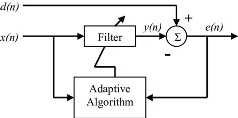

CNEL
CNEL projects
EEG, voltage imaging, biological time-series modeling, and experiment infrastructure connected to CNEL research at UF.
My work is organized around two tracks: lab-focused research in CNEL and engineering, workshop, and prototype work through IEEE SPS at UF. The common thread is signal processing that remains useful when the data is noisy, the hardware is imperfect, and the deployment constraints are real.
EEG, voltage imaging, biological time-series modeling, and experiment infrastructure connected to CNEL research at UF.
Student-facing research engineering, workshops, neurotechnology prototypes, robotics, and open-source systems through IEEE SPS at UF.
Canonical project pages with collaborators, scope, and related work.

Pipeline that turns brain-wave recordings (EEG) into a small set of hidden time-series ‘states’ using a state-space model (Hierarchical Linear Dynamical System, HLDS), then evaluates those states for prediction and separability.

Pipeline for 2D voltage imaging videos that flags ‘events’ (fast, localized changes) using statistical detectors inspired by radar signal processing, producing maps and summaries for downstream analysis.

Reusable experiment scaffolding for time-series ML: standardized configs, runs, metrics, and plots so model comparisons are fair and repeatable.

System that extracts structured nodes (claims, evidence, limitations, etc.) from papers and scores them to support literature review and comparison across a collection.
Short public notes that explain what I care about, what I am learning, and where the research is moving.
EEG work gets more informative when temporal structure is part of the model instead of something the pipeline averages away.

Biosignal research gets cleaner when hardware, firmware, and modeling are treated as one system instead of three separate concerns.
Workshop design works better when theory and application are taught as one loop instead of two separate tracks.